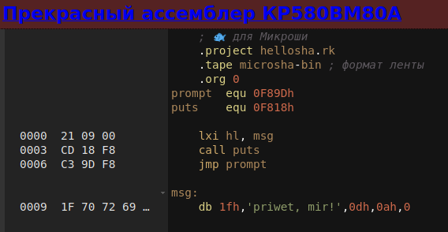

Сущесвует онлайн-сервис, который называется Pretty Assembler. Это сервис, который позволяет в окне браузера писать Ассемблерный код под популярные ПЭВМ времен позднего СССР, имеющие в качестве центрального процессора микросхему КР580ВМ80А. Поддерживаются следующие компьютеры:
Выбор целевого компьютера производится путем нажатия на рыбку в первой строке Ассемблерного листинга.

Данный Ассемблер сразу переводит ассемблерные инструкции в машинный код, и его можно сохранить в виде бинарного файла или в виде WAV-файла в формате соответсвующей ПЭВМ. Есть даже кнопка Play для проигрывания программы через звуковую карту компьютера. Таким образом, если соеденить звуковое гнездо PC-компьютера и магнитофоный вход ПЭВМ, можно напрямую загружать программы в ПЭВМ прямо из браузера. Вся строка управления Ассемблером выглядит так:
Где:
Исходники этого чуда находятся здесь: https://github.com/svofski/pretty-8080-assembler
По всей видимости, данный проект написан полностью на JavaScript, и для его работы не нужно ничего кроме браузера, поэтому данный проект может работать и локально, если его просто выкачать и открыть файл index.html. В коде видно использование Node.JS, но похоже что Node используется только для организации процесса автоматического тестирования.